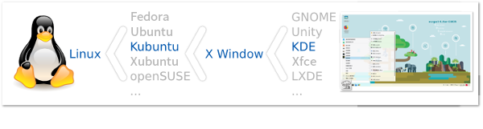

<h1 class="title">ezgo 的設計理念</h1>
<div class="main">
    <div class="content">
	<ul>
	    <li>ezgo 的設計理念聚焦在視窗環境下的自由軟體應用。</li>
	    <li>每一套 Linux 都會有 X Window 作為視窗桌面環境，而現在比較常見的桌面環境有 GNOME、Unity、KDE、Xfce 和 LXDE 等。</li>
	    <li>ezgo13 以 Ubuntu 相關計畫 Kubuntu16.04 為開發基礎，桌面環境為 KDE。</li>
	    <li>但不論是什麼樣的 Linux 系統和桌面環境，我們的應用焦點還是在作業系統上的應用軟體。</li>
	</ul>
    </div>
</div>

		
